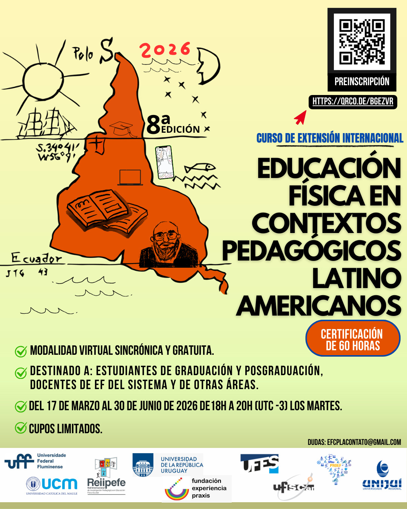

Educación Física en Contextos Pedagógicos Latinoamericanos (EFCPLA)
El curso se realizará entre el 17 de marzo y el 30 de junio, con encuentros sincrónicos en línea los días martes entre 18.00 y 20.00 (UTC 3). Para obtener la certificación se requiere el 75% de asistencia y la aprobación del trabajo final.
INSCRIPCIONES OCTAVA COHORTE ESTÁN ABIERTAS ENTRE EL 6 Y EL 10 DE MARZO EN EL SIGUIENTE ENLACE: https://docs.google.com/forms/d/1eVNSr8mssDlhRBqo6_L-Emb6byZQuMk1KMnLfO36Qcs/edit
Gracias a la generosa invitación de los profesores: Osmar Moreira de Souza Júnior de la Universidade Federal de São Carlos (UFSCar, Brasil y Ricardo Carvalho la Universidad Católica del Maule UCM, Chile), docentes y estudiantes de Praxis participamos de una iniciativa que, en un formato digital y gratuito, promueve la ampliación de horizontes culturales vinculado a las raíces latinoamericanas con temáticas centrales de la formación de profesor@s en Educación Física. Cuestiones ligadas a los sistemas educativos, formación docente, construcción del campo disciplinar en Sudamérica, jurisprudencia, entre otros son analizados con perspectiva decolonial, de educación para la pluralidad, especialmente en las relaciones étnico-raciales y de género. El curso promueve enfoques disciplinares orientados a contribuir en la formación de ciudadanía comprometida con los derechos humanos, republicana y democrática. El equipo docente, además de los mencionados, cuenta con profesionales de la Universidad de la República (Udelar), de Uruguay; donde la propuesta se inscribe en el marco de Educación Permanente.